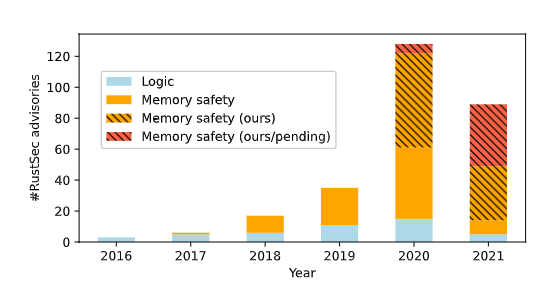
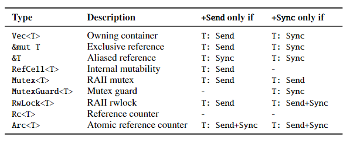
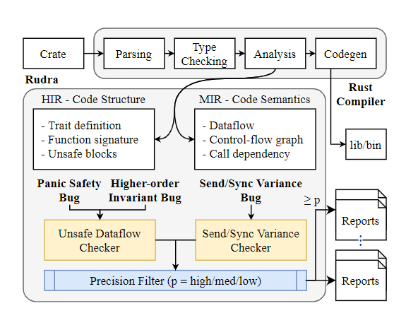

论文导读 | Rudra : 查找 Rust 生态系统中的内存安全 Bug
作者：张汉东
引子
美国佐治亚理工学院的系统软件安全实验室开源了Rudra ，用于分析和报告 Unsafe Rust 代码中潜在的内存安全和漏洞，为此他们也将在 2021 年第 28 届 ACM 操作系统原则研讨会论文集上发表相关论文，该论文目前在 Rudra 源码仓库中提供下载。
说明：本篇文章不是论文的翻译，而是本人对该论文的梳理和总结。
概要
Rust 语言关注内存安全和性能，Rust 目前已经在传统的系统软件中得到了广泛的应用，如操作系统、嵌入式系统、网络框架、浏览器等，在这些领域，安全和性能都是不可或缺的。
Rust 内存安全的思想是在编译时验证内存的所有权，具体而言是验证内存分配对象的访问和生存期。Rust 编译器对值的共享和独占引用通过借用检查提供两个保证：
- 引用的生存期不能长于其拥有者变量的生存期。为了避免 use-after-free (UAF) 。
- 共享和独占引用不能同时存在，排除了并发读写同一个值的风险。
不幸的是，这些安全规则太过限制。在某些需要调用底层硬件系统，或需要获得更好性能时，需要暂时绕过安全规则。这些需求无法被 Safe Rust 解决，但是对于系统开发却是必不可少的，所以 Unsafe Rust 被引入。Unsafe Rust 意味着，编译器的安全检查职责被暂时委托给了程序员。
Unsafe Rust代码的健全性（soundness ）对于整个程序的内存安全是至关重要的，因为大多数系统软件，如操作系统或标准库，都离不开它。
有些人可能比较天真地以为，Unsafe Rust 只要在审查源码的时候就可以排除它的风险。然而，问题的关键在于，健全性的推理是非常微妙的，且很容易出错，原因有三：
- 健全性的错误会顺道破坏Rust的安全边界，这意味着所有的外部代码，包括标准库都应该是健全的。
- Safe 和 Unsafe 的代码是相互依赖的。
- 编译器插入的所有不可见的代码路径都需要由程序员正确推理。
为了让 Rust 有一个健全性的基础，已经有了很多研究型项目，比如形式化类型系统和操作语义，验证其正确性，并且建立模型用于检查。这些都是非常重要的，但还不够实用，因为它没有覆盖到整个生态系统。另外还有一些动态方法，比如 Miri 和 Fuzz 模糊测试，但是这些方法不太容易被大规模使用，因为它需要大量的计算资源。
当前，Rust 语言正在变得流行，Unsafe Rust 的包也逐渐变多。因此，设计一个实用的检测内存安全的算法就很重要了。
这篇论文介绍了三种重要的Bug模式，并介绍了 Unsafe 代码，以及提供 Rudra 这样的工具。该论文作者的工作一共有三个贡献：
- 确定了三种 Unsafe Rust 中的 Bug 模式，并且设计了两种新的算法可以发现它们。
- 使用 Rudra 在Rust 生态系统中发现263个新的内存安全漏洞。这代表了自2016年以来RustSec中所有bug的41.4%。
- 开源。Rudra 是开源的，我们计划 贡献其核心算法到官方的Rust linter中。
Rudra
Rudra 用于分析和报告Unsafe Rust 代码中潜在的内存安全漏洞。 由于Unsafe 代码中的错误威胁到 Rust 安全保证的基础，Rudra 的主要重点是将我们的分析扩展到 Rust 包注册仓库（比如 crates.io）中托管的所有程序和库。Rudra 可以在 6.5 小时内扫描整个注册仓库（43k 包）并识别出 263 个以前未知的内存安全漏洞，提交 98 个 RustSec 公告和 74 个 CVE，占自 2016 年以来报告给 RustSec 的所有漏洞的 41.4%。

Rudra 发现的新漏洞很微妙，它们存在于Rust 专家的库中：两个在 std 库中，一个在官方 futures 库中，一个在 Rust 编译器 rustc 中。 Rudra 已经开源， 并计划将其算法集成到官方 Rust linter 中。
Rudra， 这个名称来自于 梵文，译为鲁特罗（或楼陀罗），印度神话中司风暴、狩猎、死亡和自然界之神。他在暴怒时会滥伤人畜；他又擅长以草药来给人治病。其名意为“狂吼”或“咆哮”（可能是飓风或暴风雨）。
Rudra 和 Miri 的区别 ：
Rudra是静态分析，无需执行即可分析源码。Miri是解释器，需要执行代码。两者可以结合使用。
关于 Unsafe Rust
因为 unsafe 关键字的存在，引出了一个有趣的 API 设计领域： 如何交流 API 的安全性。
通常有两种方法：
- 内部 Unsafe API 直接暴露给 API 用户，但是使用 unsafe 关键字来声明该 API 是不安全的，也需要添加安全边界的注释。
- 对 API 进行安全封装（安全抽象），即在内部使用断言来保证在越过安全边界时可以Panic，从而避免 UB 的产生。
第二种方法，即将 Unsafe 因素隐藏在安全 API 之下的安全抽象，已经成为 Rust 社区的一种约定俗成。
Safe 和 Unsafe 的分离，可以让我们区分出谁为安全漏洞负责。Safe Rust 意味着，无论如何都不可能导致未定义行为。换句话说，Safe API 的职责是，确保任何有效的输入不会破坏内部封装的 Unsafe 代码的行为预期。
这与C或C++形成了鲜明的对比，在C或C++中，用户的责任是正确遵守 API 的预期用法。
比如，在 libc 中的printf()，当它调用一个错误的指针而导致段错误的时候，没有人会指责它。然而这个问题却导致了一系列的内存安全问题：格式字符串漏洞（format-string vulnerability）。还记得前段时间 苹果手机因为加入一个经过特别构造名字的Wifi就变砖的漏洞否？
而在 Rust 中，println!() 就不应该也不可能导致一个段错误。此外，如果一个输入确实导致了段错误，那么它会被认为是 API 开发者的错误。
Rust 中内存安全Bug 的定义
在 Rust 中有两类 Unsafe 定义： Unsafe 函数 和 Unsafe 特质（trait）。
Unsafe 函数希望调用者在调用该函数时，可以确保其安全性。
Unsafe 特质则希望实现该 trait 的时候提供额外的语义保证。比如标准库里的 pub unsafe trait TrustedLen: Iterator { }，该 trait 要求必须检查 Iterator::size_hint() 的上界，才能保证 TrustedLen 所表达的“可信的长度”语义。
该论文对 内存安全 Bug 提供了一个清晰的一致性的定义，而非 Rust 操作语义：
定义 1： 类型（Type）和值（Value）是以常规方式定义的。类型是值的集合。
定义2： 对于 类型 T， safe-value(T) 被定义为可以安全创建的值。例如 Rust 里的字符串是内部表示为字节的数组，但它在通过 安全 API 创建的时候只能包含 UTF-8 编码的值。
定义3：函数 F 是接收类型为 arg(F)的值，并返回一个类型为 ret(F) 的值。对于多个参数，我们将其看作元组。
定义4： 如果 在 safe-value(arg(F))集合中存在v （记为：∃𝑣 ∈ safe-value(𝑎𝑟𝑔(𝐹)) ），使得当调用 F(v)时触发违反内存安全的行为，或者返回一个不属于 safe-value(𝑟𝑒𝑡(𝐹)) 集合中的返回值𝑣𝑟𝑒𝑡 时（记为：𝑣𝑟𝑒𝑡 ∉ safe-value(𝑟𝑒𝑡(𝐹))），则 函数 F 有内存安全缺陷。
定义5： 对于一个泛型函数Λ，pred(Λ)被定义为满足Λ的类型谓词（指trait 限定）的类型集合。给定一个类型𝑇∈pred(Λ)，resolve(Λ,𝑇)将泛型函数实例化为具体函数𝐹。
定义6： 如果一个泛型函数Λ可以被实例化为一个具有内存安全缺陷的函数，即，∃𝑇 ∈ pred(Λ)，使得𝐹=resolve(Λ,𝑇)具有内存安全缺陷，则该泛型函数具有内存安全缺陷。
定义7：如果一个类型的Send实现不能跨越线程边界传输，那么该类型就有内存安全问题。
定义8： 如果一个类型的Sync实现不能通过别名指针（aliased pointer）并发地访问该类型，那么它就有内存安全问题。即，定义了一个非线程安全的方法，该方法接收&self。
Unsafe Rust 中三类重要 Bug 模式
论文通过对已知漏洞进行定性分析，总结出 Unsafe Rust 中三类重要的 Bug 模式：
- Panic Safety （恐慌安全）： 由恐慌导致的内存安全 Bug。
- Higher-order Safety Invariant（高阶安全不变性 ）：由高阶类型没有给定安全保证而引发的 Bug。
- Propagating Send/Sync in Generic Types（泛型中
Send/Sync传播）：由泛型内部类型不正确的手工Send/Sync实现引起泛型Send/Sync约束不正确而引发的 Bug。
Panic Safety
这与其他编程语言（如C++）中的异常安全的概念类似。Rust 中类似其他编程语言中异常（Exception）的概念叫 恐慌（Panic）。恐慌一般在程序达到不可恢复的状态才用，当然在 Rust 中也可以对一些实现了 UnwindSafe trait 的类型捕获恐慌。
当 Panic 发生时，会引发栈回退（stack unwind），调用栈分配对象的析构函数，并将控制流转移给恐慌处理程序中。所以，当恐慌发生的时候，当前存活变量的析构函数将会被调用，从而导致一些内存安全问题，比如释放已经释放过的内存。
但是想要正确的推理在 Unsafe 代码中的恐慌安全，是非常困难且易于出错的。通常， 封装的Unsafe 代码可能会暂时绕过所有权检查，而且，安全封装的 API 在内部unsafe 代码的值返回之前，会根据安全边界条件确保它不会违反安全规则。但是，假如封装的Unsafe 代码发生了恐慌，则其外部安全检查可能不会执行。这很可能导致类似 C/C++ 中 未初始化（Uninitialized ）或双重释放（Double Free）的内存不安全问题。
论文对此给出定义：
如果一个函数𝐹 Drop一个类型为𝑇的值𝑣，使得𝑣在Unwind 过程中 𝑣 ∉ safe-value(𝑇)，并导致违反内存安全，则说明该函数存在恐慌性安全漏洞。
// 标准库 `String::retain()` 曝出的 CVE-2020-36317 Panic safety bug pub fn retain<F>(&mut self, mut f: F) where F: FnMut(char) -> bool { let len = self.len(); let mut del_bytes = 0; let mut idx = 0; unsafe { self.vec.set_len(0); } // + 修复bug 的代码 while idx < len { let ch = unsafe { self.get_unchecked(idx..len).chars().next().unwrap() }; let ch_len = ch.len_utf8(); // self is left in an inconsistent state if f() panics // 此处如果 f() 发生了恐慌，self 的长度就会不一致 if !f(ch) { del_bytes += ch_len; } else if del_bytes > 0 { unsafe { ptr::copy(self.vec.as_ptr().add(idx), self.vec.as_mut_ptr().add(idx - del_bytes), ch_len); } } idx += ch_len; // point idx to the next char } unsafe { self.vec.set_len(len - del_bytes); } // + 修复bug 的代码 ，如果 while 里发生panic，则将返回长度设置为 0 } fn main(){ // PoC: creates a non-utf-8 string in the unwinding path // 此处传入一个 非 UTF-8 编码字符串引发恐慌 "0è0".to_string().retain(|_| { match the_number_of_invocation() { 1 => false, 2 => true, _ => panic!(), } }); }
Higher-order Safety Invariant
一个函数应该安全地执行所有安全的输入，包括参数数据类型、泛型类型参数以及外部传入的闭包。
换句话说，一个安全的函数不应该提供比 Rust 编译器提供的安全不变式更多的东西。所谓 安全不变式就是指 Rust 里的安全函数，在任何有效输入的情况下，都不应该发生任何未定义行为。
例如，Rust 里的 sort 函数，不应该触发任何未定义行为，哪怕用户提供的比较器不遵循全序关系，也不会发生段错误。但是 Cpp 中的排序函数，当用户提供一个不兼容当前的比较器的情况下，就会发生段错误。
Rust 为 高阶类型提供的唯一安全不变式是 类型签名的正确性。然而常见的错误是，对调用者提供的函数在以下方面产生了不正确的假设：
- 逻辑一致性：比如，sort函数遵循全序关系。
- 纯洁性：对相同的输入总是返回相同的输出。
- 语义约束：只针对参数，因为它可能包含未初始化字节。
对于 Unsafe 代码，必须自己检查这些属性，或者指定正确的约束（例如，用Unafe 的特质）让调用者义务检查这些属性。
在 Rust 类型系统下，执行高阶类型的安全不变式是很困难的。比如，将一个未初始化的缓冲区传给一个调用者提供的 Read 实现。
不幸的是，许多Rust程序员为调用者提供的函数提供一个未初始化的缓冲区来优化性能，而没有意识到其固有的不健全性。由于其普遍性和微妙性，Rust标准库现在明确指出，用一个未初始化的缓冲区调用read() 本身就是不健全的行为。
论文对此给出定义：
高阶不变性bug是指函数中的内存安全bug，它是由假设保证高阶不变性引起的，而 Rust 的类型系统对调用者提供的代码没有保证。
#![allow(unused)] fn main() { 1 // CVE-2020-36323: a higher-order invariant bug in join() 2 fn join_generic_copy<B, T, S>(slice: &[S], sep: &[T]) -> Vec<T> 3 where T: Copy, B: AsRef<[T]> + ?Sized, S: Borrow<B> 4 { 5 let mut iter = slice.iter(); 6 7 // `slice`is converted for the first time 8 // during the buffer size calculation. 9 let len = ...; // `slice` 在这里第一次被转换 10 let mut result = Vec::with_capacity(len); 11 ... 12 unsafe { 13 let pos = result.len(); 14 let target = result.get_unchecked_mut(pos..len); 15 16 // `slice`is converted for the second time in macro 17 // while copying the rest of the components. 18 spezialize_for_lengths!(sep, target, iter; // `slice` 第二次被转换 19 0, 1, 2, 3, 4); 20 21 // Indicate that the vector is initialized 22 result.set_len(len); 23 } 24 result 25 } 26 27 // PoC: a benign join() can trigger a memory safety issue 28 impl Borrow<str> for InconsistentBorrow { 29 fn borrow(&self) -> &str { 30 if self.is_first_time() { 31 "123456" 32 } else { 33 "0" 34 } 35 } 36 } 37 38 let arr: [InconsistentBorrow; 3] = Default::default(); 39 arr.join("-"); }
该代码是为 Borrow<str>实现 join 方法内部调用的一个函数 join_generic_copy的展示。 在 join_generic_copy 内部，会对 slice 进行两次转换，而在 spezialize_for_lengths! 宏内部，调用了.borrow()方法，如果第二次转换和第一次不一样，而会返回一个未初始化字节的字符串。
这里， Borrow<B> 是高阶类型，它内部 borrow 的一致性其实并没有保证，可能会返回不同的slice，如果不做处理，很可能会暴露出未初始化的字节给调用者。
Propagating Send/Sync in Generic Types
当涉及泛型时候， Send/Sync 的规则会变得很复杂，如图：

通常 Send/Sync 会由编译器自动实现，但是当开发者涉及 Unsafe 时，可能需要手动实现这俩 trait。手动实现 Send/Sync 想要正确很困难。一个不懂 Send/Sync 如何手动实现的开发者，很容易在代码中引入 Bug。
论文对此给出定义：
如果泛型在实现Send/Sync类型时，如果它对内部类型上指定了不正确的Send/Sync约束，那么泛型的Send/Sync约束就会变得不正确。这就是 泛型中 Send/Sync 传播引发的不安全 Bug。
#![allow(unused)] fn main() { 1 // CVE-2020-35905: incorrect uses of Send/Sync on Rust's futures 2 pub struct MappedMutexGuard<'a, T: ?Sized, U: ?Sized> { 3 mutex: &'a Mutex<T>, 4 value: *mut U, 5 _marker: PhantomData<&'a mut U>, // + 修复代码 6 } 7 8 impl<'a, T: ?Sized> MutexGuard<'a, T> { 9 pub fn map<U: ?Sized, F>(this: Self, f: F) 10 -> MappedMutexGuard<'a, T, U> 11 where F: FnOnce(&mut T) -> &mut U { 12 let mutex = this.mutex; 13 let value = f(unsafe { &mut *this.mutex.value.get() }); 14 mem::forget(this); 15 // MappedMutexGuard { mutex, value } 16 MappedMutexGuard { mutex, value, _marker: PhantomData } // + 修复代码 17 } 18 } 19 20 // unsafe impl<T: ?Sized + Send, U: ?Sized> Send 21 unsafe impl<T: ?Sized + Send, U: ?Sized + Send> Send // + 修复代码 22 for MappedMutexGuard<'_, T, U> {} 23 //unsafe impl<T: ?Sized + Sync, U: ?Sized> Sync 24 unsafe impl<T: ?Sized + Sync, U: ?Sized + Sync> Sync // + 修复代码 25 for MappedMutexGuard<'_, T, U> {} 26 27 // PoC: this safe Rust code allows race on reference counter 28 * MutexGuard::map(guard, |_| Box::leak(Box::new(Rc::new(true)))); }
Rust futures 库中发现的问题，错误的手工 Send/Sync实现 破坏了线程安全保证。
受影响的版本中，MappedMutexGuard的Send/Sync实现只考虑了T上的差异，而MappedMutexGuard则取消了对U的引用。
当MutexGuard::map()中使用的闭包返回与T无关的U时，这可能导致安全Rust代码中的数据竞争。
这个问题通过修正Send/Sync的实现，以及在MappedMutexGuard类型中添加一个PhantomData<&'a mut U>标记来告诉编译器，这个防护也是在U之上。
Rudra 的设计
整体设计图如下：

Rudra 通过 HIR 来获取 crate 的代码结构（包括 trait定义、函数签名、Unsafe 块等），通过 MIR 来获取代码语义（数据流、控制流图、调用依赖等）。为什么不使用 LLVM IR 呢？因为在这个层面上 Rust 的抽象已经消失了。
然后通过内部的 Unsafe Dataflow Checker (UD) 来检查 Panic Safety Bug 和 Higher-order Invariant Bug，通过 Send/Sync Variance Checker(SV)来检查 Send/Sync Variance Bug。最终将结果按优先级汇总输出报告。
Unsafe Dataflow Checker (UD) 和 Send/Sync Variance Checker(SV) 对应两套算法，具体可参加论文和代码。
关于安全性相关英文术语解释
英文中关于安全性有多个单词，比如 Security和Safety，但是中文只有“安全性”这一个词。所以这里需要说明一下：
- Security，通常指信息安全、网络安全之类。
- Safety，通常指功能性安全。
通常，会因为功能性的漏洞，而造成信息安全问题。
小结
该论文的最后一章，还包含了很多数据来证明 Rudra 的效果，以及 Rudra 和 Fuzz 测试、Miri 和其他 Rust 静态分析工具的比较等结果。

上图是论文作者们使用 Rudra 对 Rust 实现的几个操作系统进行检查的结果，详细内容参加论文。
这篇论文非常值得一看，对于我们真正理解 Rust 的安全理念有所帮助。该论文也为 Rust 语言的安全状况提供了新的视角，也提供了一个静态检查工具，值得我们关注。